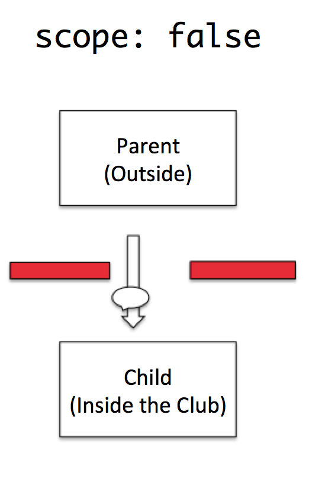

The child is dropped off by the parent, inheriting the wisdon/knowledge that the parent has passed onto the child of how to behave in the club.

When the scope is false, the child tells everything to the parent about what goes on in the club. I like to think of it as false because let's face it, no child would do that for real.